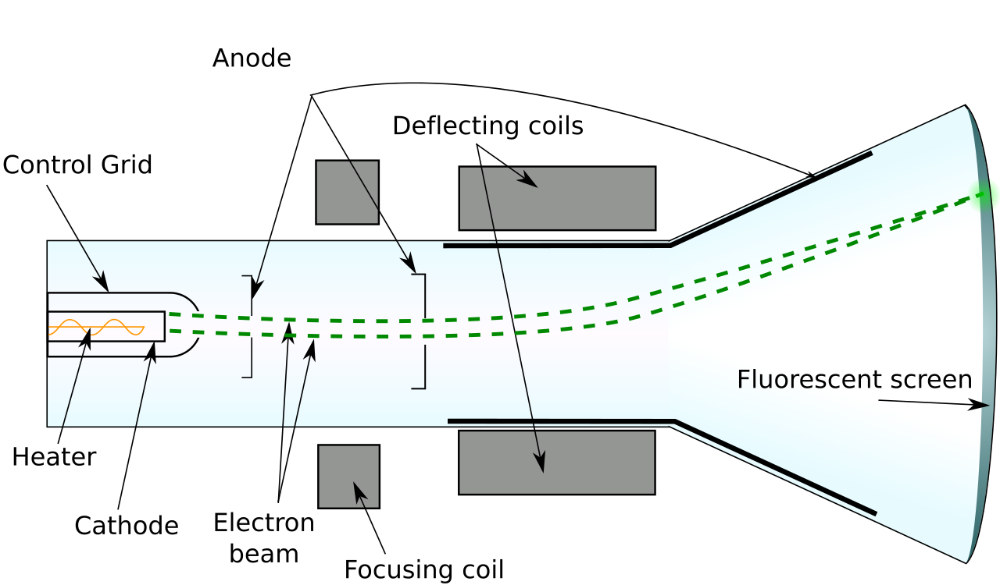

Early computer displays
In the early 1950s, MIT's Whirlwind computer demonstrated interactive text and graphics on a cathode-ray tube (CRT). Later terminals brought visible results directly to users instead of relying only on printed output. The IBM 2250, a 1960s graphics display, could draw points, lines and characters for technical work.

How a CRT forms an image
An electron gun sends a focused beam through a vacuum tube toward a phosphor-coated screen. The phosphor glows where the beam strikes. Deflection systems steer the beam to different positions. Vector displays draw selected lines directly, while raster displays scan across the screen in rows. Monochrome terminals show one phosphor color; color CRTs use red, green and blue phosphors.

Strengths and limitations
CRT displays supported interactive work and moving images, but their deep glass tubes made them bulky and heavy. Flat panels offered a different physical design for desks and portable devices.